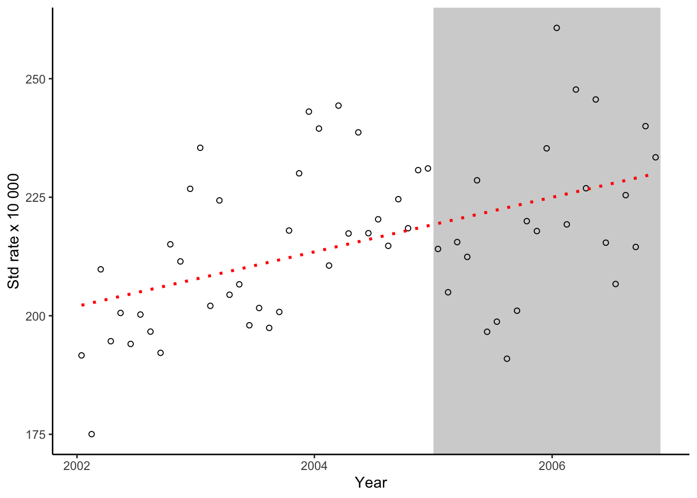

Chapter 5 Natural experiments
The readings for this chapter are:
- Bernal, Cummins, and Gasparrini (2017) (on interrupted time series), with a correction to an equation in the paper at https://academic.oup.com/ije/article/49/4/1414/5900884. Example data and R code for the paper are available to download through a Supplemental Appendix.
- Barone-Adesi et al. (2011), the scientific paper highlighted as an example in the tutorial in the previous reading
- Bor et al. (2014) (on interrupted time series)
- Casey et al. (2018) (on difference-in-differences)
- Mendola (2018), an Invited Commentary on the previous reading
5.1 Interrupted time series
[Interrupted time series assessing effects of policy/intervention in specific point in time]
# Load some packages that will likely be useful
library(tidyverse)
library(viridis)
library(lubridate)
library(broom)
# Load and clean the data
obs <- read_csv("data/lndn_obs.csv") %>%
mutate(dow = wday(date, label = TRUE)) %>%
mutate(time = as.numeric(date) - first(as.numeric(date)))london_summer_2012 <- obs %>%
filter(ymd("2012-06-01") <= date & date <= ymd("2012-09-30"))
london_olympic_dates <- tibble(date = ymd(c("2012-07-27", "2012-08-12")))
ggplot() +
geom_polygon(aes(x = ymd(c("2012-07-27", "2012-08-12",
"2012-08-12", "2012-07-27")),
y = c(Inf, Inf, -Inf, -Inf)), fill = "cyan", alpha = 0.2) +
geom_line(data = london_summer_2012, aes(x = date, y = tmean)) +
labs(x = "Date", y = "Mean daily temperature")
Example data from Bernal, Cummins, and Gasparrini (2017):
sicily <- read_csv("data/sicily.csv") %>%
mutate(date = paste(year, month, "15"), # Use middle of the month for plotting
date = ymd(date))Identify dates of the smoking band:
sicily %>%
group_by(smokban) %>%
slice(c(1, n()))## # A tibble: 4 x 8
## # Groups: smokban [2]
## year month aces time smokban pop stdpop date
## <dbl> <dbl> <dbl> <dbl> <dbl> <dbl> <dbl> <date>
## 1 2002 1 728 1 0 364277. 379875. 2002-01-15
## 2 2004 12 886 36 0 364700. 383428. 2004-12-15
## 3 2005 1 831 37 1 364421. 388153. 2005-01-15
## 4 2006 11 912 59 1 363833. 390712. 2006-11-15Recreate Figure 1 from Bernal, Cummins, and Gasparrini (2017):
ggplot() +
geom_polygon(aes(x = ymd(c("2005-01-01", "2006-11-30",
"2006-11-30", "2005-01-01")),
y = c(Inf, Inf, -Inf, -Inf)), fill = "lightgray") +
geom_point(data = sicily,
aes(x = date, y = 10000 * 10 * aces / stdpop), shape = 21) +
geom_smooth(data = sicily,
aes(x = date, y = 10000 * 10 * aces / stdpop), # Need the extra 10 to line up with Figure in paper---figure out why
method = "lm", se = FALSE, color = "red", linetype = 3) +
labs(x = "Year", y = "Std rate x 10 000") +
theme_classic()
5.2 Difference-in-differences
[Difference-in differences application for intervention introduced in one point in time]
References
Barone-Adesi, Francesco, Antonio Gasparrini, Loredana Vizzini, Franco Merletti, and Lorenzo Richiardi. 2011. “Effects of Italian Smoking Regulation on Rates of Hospital Admission for Acute Coronary Events: A Country-Wide Study.” PloS One 6 (3): e17419.
Bernal, James Lopez, Steven Cummins, and Antonio Gasparrini. 2017. “Interrupted Time Series Regression for the Evaluation of Public Health Interventions: A Tutorial.” International Journal of Epidemiology 46 (1): 348–55.
Bor, Jacob, Ellen Moscoe, Portia Mutevedzi, Marie-Louise Newell, and Till Bärnighausen. 2014. “Regression Discontinuity Designs in Epidemiology: Causal Inference Without Randomized Trials.” Epidemiology 25 (5): 729.
Casey, Joan A, Deborah Karasek, Elizabeth L Ogburn, Dana E Goin, Kristina Dang, Paula A Braveman, and Rachel Morello-Frosch. 2018. “Retirements of Coal and Oil Power Plants in California: Association with Reduced Preterm Birth Among Populations Nearby.” American Journal of Epidemiology 187 (8): 1586–94.
Mendola, Pauline. 2018. “Invited Commentary: The Power of Preterm Birth to Motivate a Cleaner Environment.” American Journal of Epidemiology 187 (8): 1595–97.